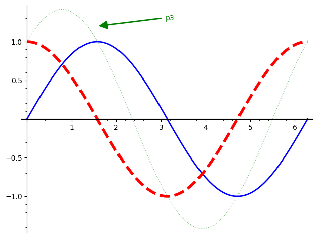
p1-p2-p3-arrow: Παράδειγμα διαδραστικού διαγράμματος
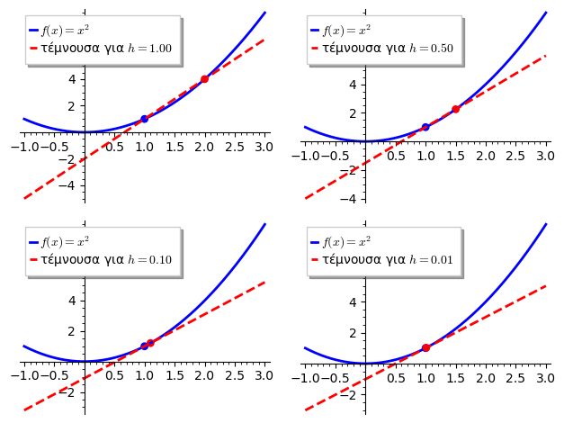
paragwgos_graphic_array: Παράσταση παραγώγου σε πίνακα
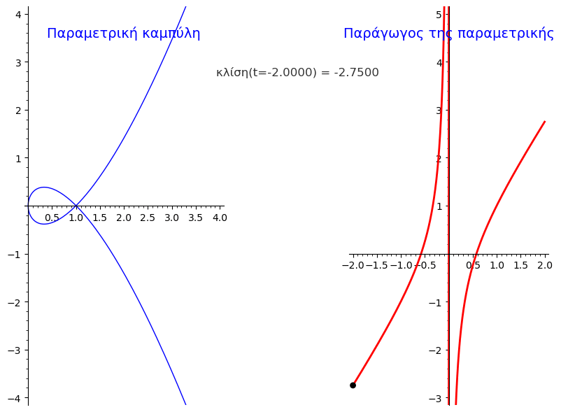
parametric_derivative_: Κινούμενη εικόνα παραμετρικής παραγώγου
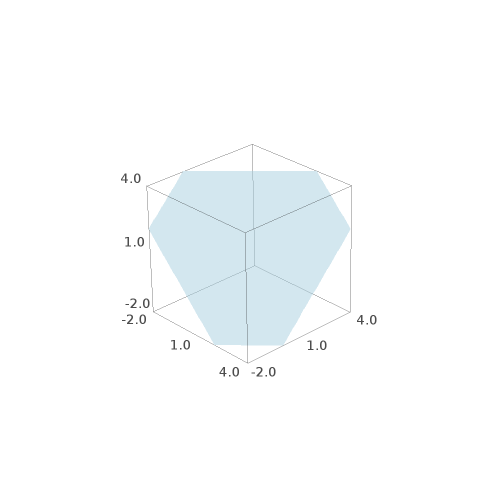
plane_me_imlicitplot: Γραφική παράσταση implicit plot
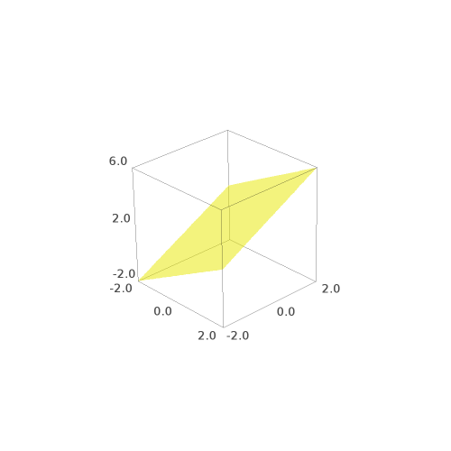
plane_me_parametric_plot: Παράμετρος γραφικής παράστασης
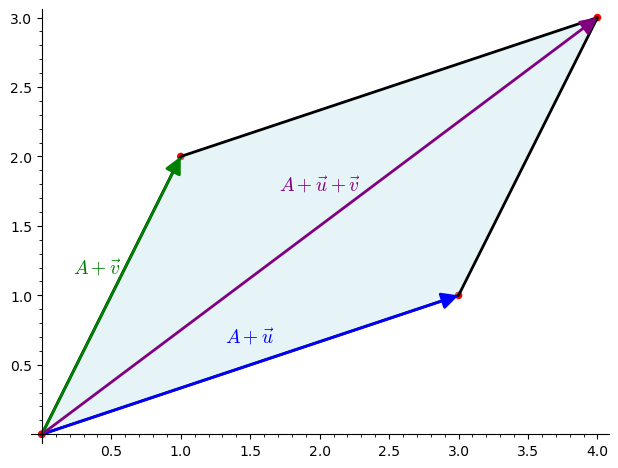
pleyresparallhlogrammou: Πλευρές παραλληλογράμμου
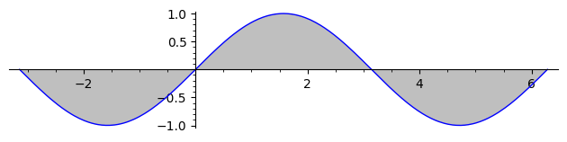
plotsin_apo_meionpi_ews2pi: Γράφημα ημιτόνου
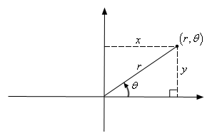
polarcoordinates: Συντεταγμένες σε πολικό σύστημα
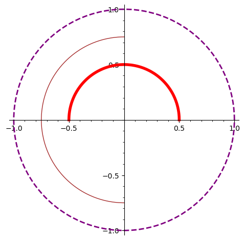
polarplot: Πολικό γράφημα
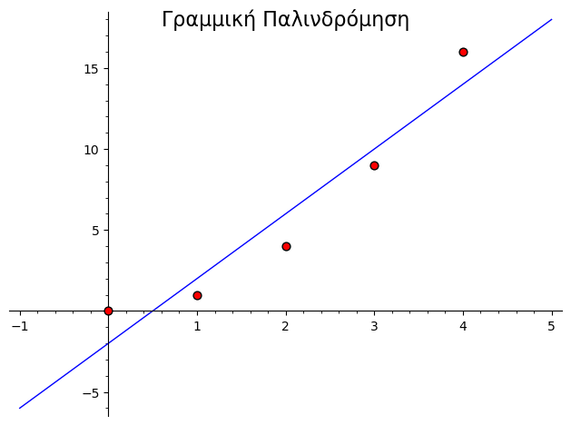
regression_with_title: Γραμμική παλινδρόμηση με τίτλο
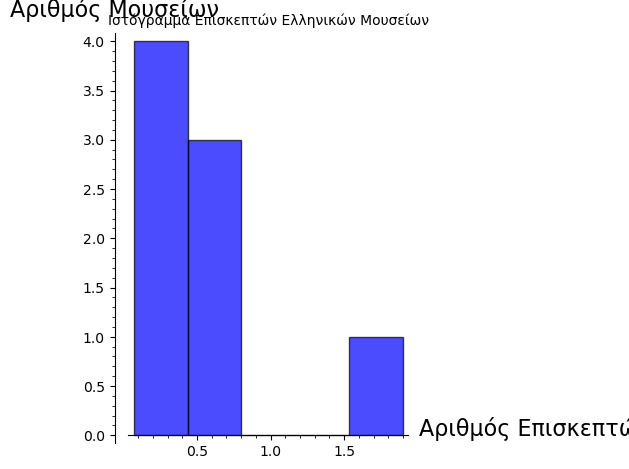
sagehistogram: Ιστογράμματα με SageMath
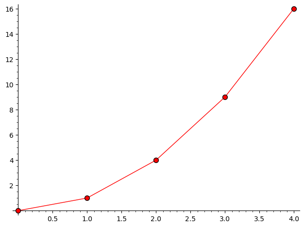
scatterandlistplot: Scatter plot και List plot
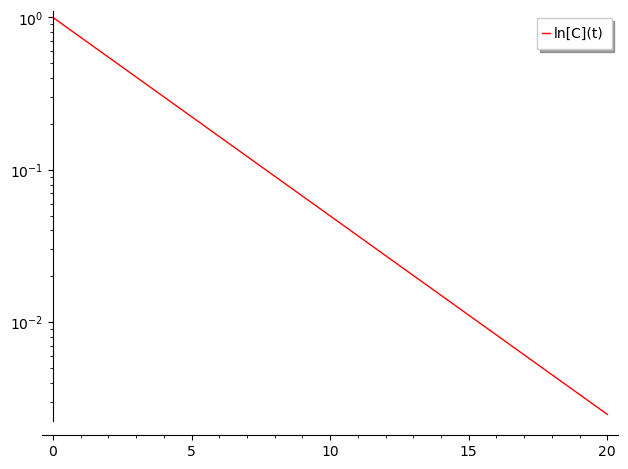
semilog: Γραφική παράσταση ημιλογαριθμική
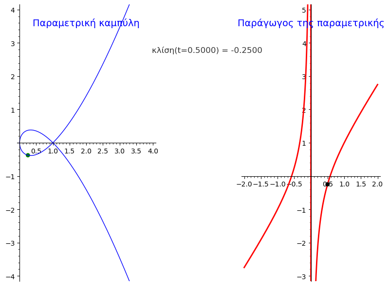
slider-paragwgoi: Παράδειγμα με slider παραγώγων
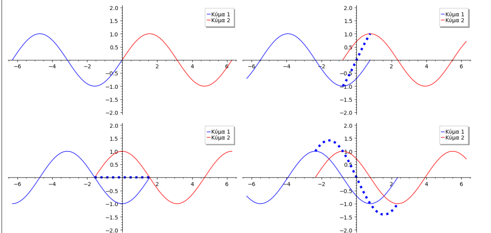
sygkroush: Προσομοίωση σύγκρουσης
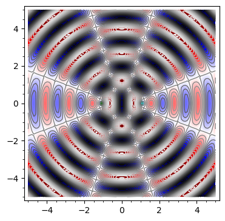
symbolh: Παράδειγμα σύμβολου
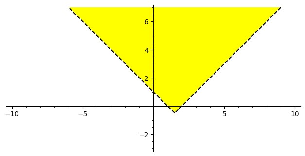
systhmaaniswsewn: Λύση συστήματος ανισώσεων
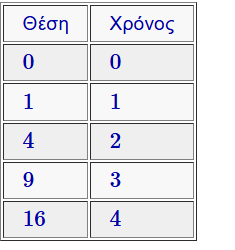
table: Παράσταση πίνακα
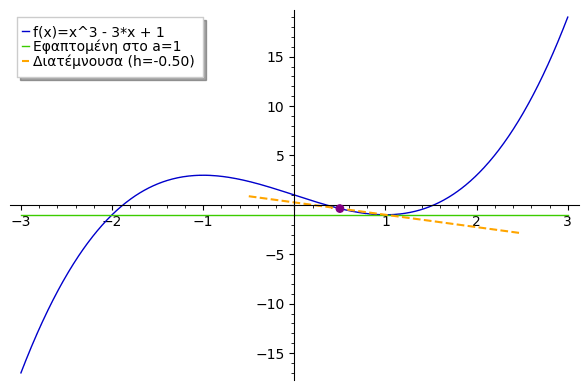
tangent_secant_: Κινούμενο tangent και secant
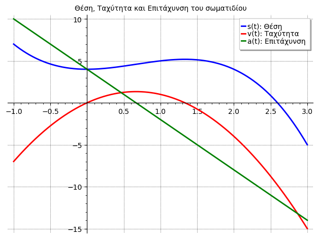
taxythta-epitaxynsh: Γραφική παράσταση ταχύτητας
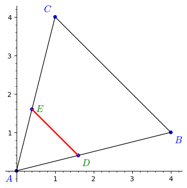
theorem_thalhs: Απόδειξη Θεωρήματος Θαλή